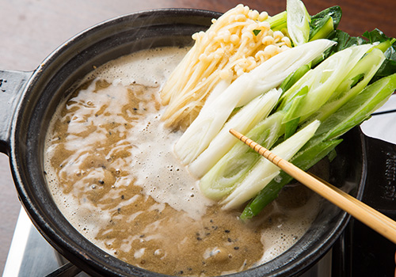

自慢の人気メニューを
ご自宅で
福岡県北九州市小倉に暖簾を掲げるうどん『秋月』は、長年地域の皆様に愛され続けて今日を迎えております。
“うどん居酒屋”というスタイルの当店が打ち出す名物の1つ“黒ごま担々鍋”を、この度通販でご購入いただけるようになりました。
最新の冷凍技術を導入する事で、お店の美味しさをそのままにお届け。
ご自宅でのお食事はもちろん、県外に出られたご家族や友人へのプレゼント、お中元・お歳暮といった贈答用にも大変ご好評いただいております。
どうぞ秋月自慢の鍋を気軽にお楽しみください。
秋月名物の
おいしさを
そのままお届け
お鍋で
温めるだけの
簡単調理
冷凍なので
好きな時に
楽しめる
うどん屋が打ち出す
優しい旨味の
オリジナル担々鍋
スープの主軸となる
旨味満載の出汁
お鍋の命と言っても過言ではないのが“出汁”の存在。
秋月では研究に研究を重ねた結果辿り着いた至極の出汁を使用しております。
国産の昆布・鰹節・うるめいわし・鯖節などを絶妙の配合でブレンド。
その香り高さと深みのある旨味は、黒ごま担々スープの美味しさの土台として感じていただけるはずです。
〆にはずせない
自慢の自家製うどん
当店は“うどん居酒屋”。当然、お鍋の〆にうどんは欠かせません。
店内で毎日打つ自家製のうどんは、長年の修業と経験が生み出す上質さが自慢。
喉ごしの滑らかさと豊かなコシは、スープの旨味をしっかりと受け止める存在感を発揮しております。
双方の融合による味わいの高め合いを存分に感じていただければ幸いです。
具材にもこだわりを
滑らかな肉質、極上の旨味
「鹿児島霧島産豚」
秋月のこだわりは、出汁やうどんだけではありません。
具材に用いる豚肉にも並々ならぬ情熱を注いでおります。
当店では鹿児島霧島産の豚の中でも特に貴重なSPF豚（無菌豚）を使用。
きめの細かい肉質と噛むほどに溢れ出す旨味は正に至福です。
さっと出汁に潜らせてしゃぶしゃぶの様にお召し上がりください。
自慢の味わいをそのままに
冷凍技術
解凍後の豚肉
「どうやったらお店の美味しさをそのままにお届けできるか。」
そう考え、様々な試行錯誤の結果辿り着いたのが〝プロトン凍結〟という技術です。
最新の急速凍結技術により凍結時の細胞の破壊を防ぐ事で、肉はドリップが出ず、野菜はシャキシャキの鮮度を保てるのです。
野菜も鮮度抜群の
シャキシャキ食感
ご自宅で簡単調理
黒ごま担々鍋の
美味しい食べ方
1食べる24時間前に豚肉と出汁を冷蔵庫に入れて解凍する
お召し上がり予定の24時間前には冷蔵庫に移し、ゆっくり時間をかけて解凍してください。
2鍋に出汁を入れて温める
まず鍋に出汁を入れて沸騰させます。
3野菜と生麩を投入する
スープが煮立ってきたら野菜と生麩を入れて煮込んでいきます。

4野菜を煮込みながら
豚肉を入れてしゃぶしゃぶに
野菜を煮込みながら、豚肉をしゃぶしゃぶ感覚でお召し上がりください。
豚肉は煮過ぎない事が美味しさの秘訣！
5取り皿に出汁を入れて
お召し上がりください
お好みでラー油もどうぞ
取り皿に出汁をよそい、野菜やお肉を満喫。
お好みで別添のラー油を入れ、ピリッとした刺激を楽しむのもおすすめです。
6具材を食べたら
〆にうどんを投入！
具材を食べ終わったら、残ったスープにうどんを投入して〆の一杯をどうぞ。
秋月自慢のつるしこ麺との絶妙なマッチングを感じていただけるはず。
うどんの後に中華麺を入れるのもおすすめです。
美味しさ詰まった出汁を
心ゆくまで存分に
最後の〆は
濃厚な美味しさの
チーズリゾットで
秋月の黒ごま担々スープを存分に味わい尽くすなら、最後にもうひと〆してみてはいかがでしょうか。
スープにご飯とチーズを入れて煮込めば、“黒ごま担々チーズリゾット”の出来上がり。深いコクを感じるスープと濃厚チーズの相性はもちろん抜群です。
お好みで薬味も入れていただければ、変化する美味しさを満喫していただける事でしょう。
ご用意いただくもの
- ・ご飯
- ・お好みのチーズ
- ・卵
- ・お好みの薬味
黒ごま担々鍋kurogoma tantannabe
2～3人前 0000円（税込み）
自家製の肉味噌とうどん屋の出汁を組み合わせた、濃厚コク旨な“黒ごま担々鍋”は、お店でも大人気メニューです。
スープ、豚肉、野菜など、具材が全てセットになっているので、ご用意いただくのはお鍋だけ。
温めるだけで簡単にプロの味をご自宅でお楽しみいただけます。
お好みの具材を追加するのも楽しみ方の1つ。
お客様だけの美味しさを探してみるのも面白いかもしれません。
セット内容
- ・黒ごま担々スープ ・うどん×2玉
- ・豚肉 ・野菜 ・生麩 ・ラー油
ご購入方法
ご注文はネット通販にて承っております。
下記リンクから販売サイトに繋がりますので、
ご購入の際は
こちらよりアクセスしてください。
よくあるご質問
- 贈答に利用したいのですが、熨斗は付けられますか？
- はい。ご注文の際にお申し付けください。
- 質問が入ります質問が入ります
- 質問の答えが入ります質問の答えが入ります質問の答えが入ります質問の答えが入ります
- 質問が入ります質問が入ります
- 質問の答えが入ります質問の答えが入ります質問の答えが入ります質問の答えが入ります